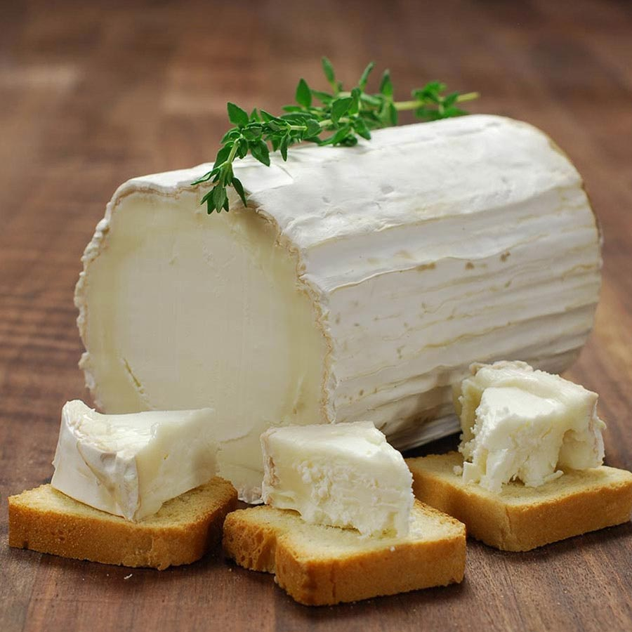
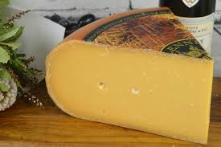

Goat cheeses have a unique, tart, earthy flavour that sets them apart from cow cheeses. This distinctive tang and aroma grows robust and bold as it ages. The flavour and aroma of goat cheese relies upon its moisture, density, ageing and flavouring.

Brie cheese is slightly pale in colour with a greyish tinge under a rind. Its flavour varies depending upon the ingredients added while producing the cheese.

It is a semi-hard cheese celebrated for its rich, unique flavour and smooth texture. The waxed rind of the cheese also changes by the age as soft, younger Dutch Gouda cheese are identified by yellow, orange, or red wax rinds white mature cheese have black wax coverings.